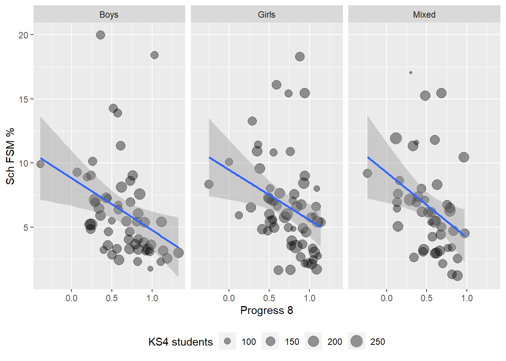
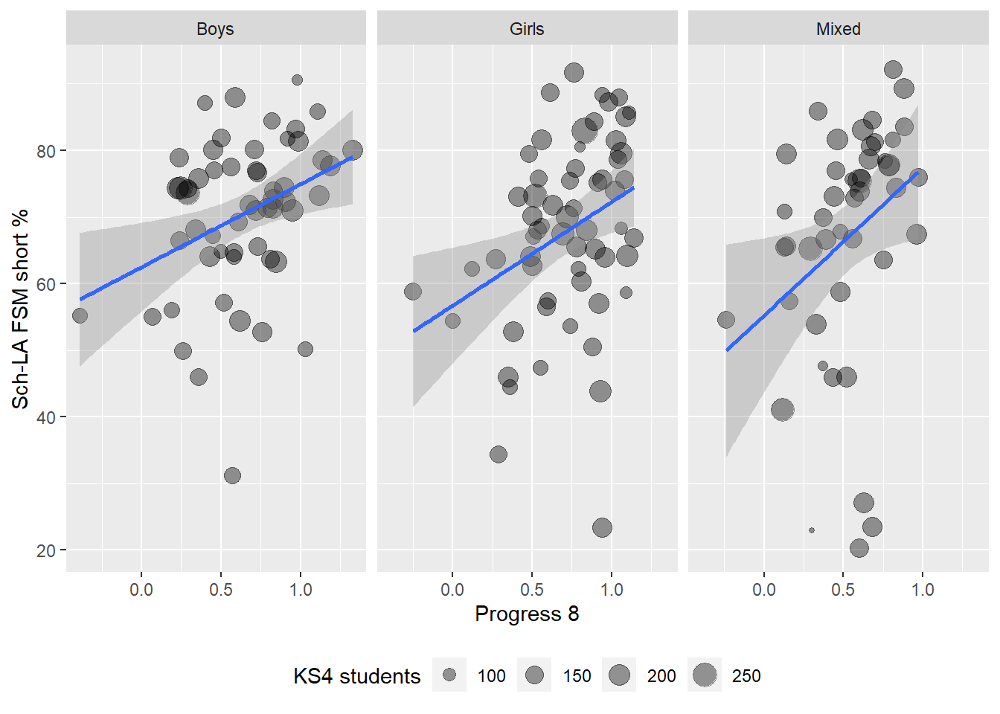

Grammar school Free School Meal students in England 2012-22
Map of providers
A map of all grammar schools in England showing access to school by students eligible for free school meals (FSM):
Year given along with overall FSM number of students and and number as a percentage of the overall school population.
2022: 89(14.1%)
Expected values for the school given as numbers (e.g. 120 and 118), if the school macthed the FSM figure for the Local Authority and Region. Percentages given are the percentage of students in the Local Authority and Region who are on free school meals
𝔼[LA :120(19.1%)]; 𝔼[Rgn:118(18.7%)];
Summary table
Summary table for all grammar schools in 2023
[1] "saving to: D:\\temp\\maps\\grammars\\grammars_and_FSM.xlsx"Stats
The things that predicts the percentage of FSM students in a school are the percentage of FSM students in a LA and the progress 8 score of school. The higher the progress 8 (P8MEA), the lower the percentage of FSM students in a school (mean=3.66%; median=2.95%; sd=2.71% ):
Sch FSM % ~ Gender + LA FSM % + Region FSM % + Progress 8
| Characteristic | Beta | 95% CI1 | p-value |
|---|---|---|---|
| Gender | |||
| Boys | — | — | |
| Girls | 0.61 | -0.44, 1.7 | 0.3 |
| Mixed | 0.17 | -0.96, 1.3 | 0.8 |
| LA FSM % | 0.37 | 0.29, 0.46 | <0.001 |
| Region FSM % | -0.04 | -0.16, 0.08 | 0.5 |
| Progress 8 | -2.6 | -4.2, -1.1 | 0.001 |
| No. Obs. | 162 | ||
| R² | 0.441 | ||
| 1 CI = Confidence Interval | |||

We can also look at the shortfall in FSM places in a school through Sch-LA FSM short %, that is the percentage difference between the schools’ FSM % and the FSM % for the Local Authority. The higher the number the bigger the difference between the number of FSM students in a school and that expected if it was representative of the local authority. Again, we see progress 8 significantly predicting the shortfall. The higher the progress 8, the less representative a school in terms of FSM students:
Sch-LA FSM short % ~ Gender + LA FSM % + Region FSM % + Progress 8
| Characteristic | Beta | 95% CI1 | p-value |
|---|---|---|---|
| Gender | |||
| Boys | — | — | |
| Girls | -3.7 | -8.8, 1.4 | 0.2 |
| Mixed | -1.9 | -7.5, 3.6 | 0.5 |
| LA FSM % | -0.14 | -0.55, 0.27 | 0.5 |
| Region FSM % | 0.13 | -0.47, 0.72 | 0.7 |
| Progress 8 | 15 | 7.2, 23 | <0.001 |
| No. Obs. | 162 | ||
| R² | 0.117 | ||
| 1 CI = Confidence Interval | |||
